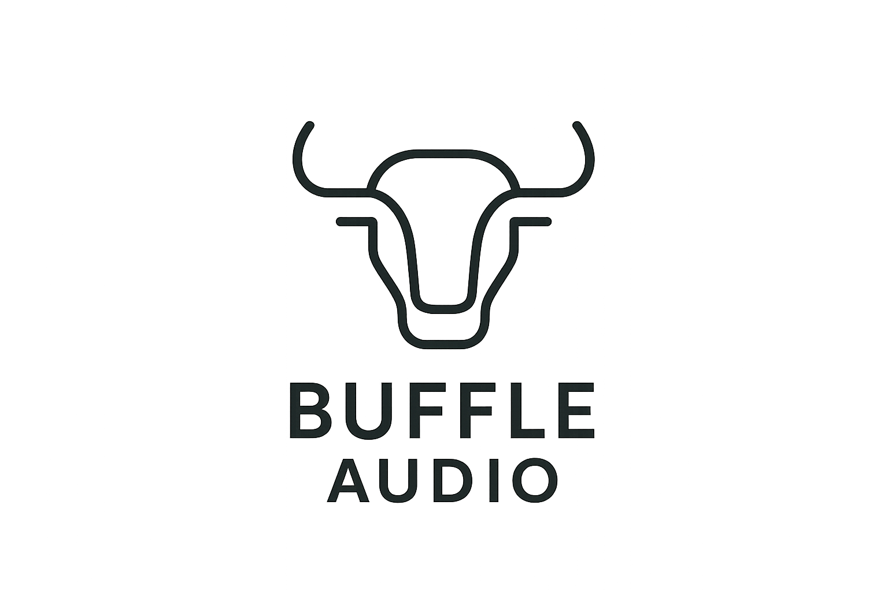

Choose the layer
Start from Manual, Double Tight, Choir Natural, Rap Stack, or ADR Loose so the timing, tamer, naturalness, and stereo-focus feel match the part.

Buffle Audio AlignVocal stack alignment for macOS
Put Align on the Dub, feed the lead as the Guide, and make timing decisions you can trust. It reads the Guide/Dub relationship, suggests safe early or late moves, lets you A/B the changed material, and keeps consonant cleanup under control.
Standalone app, AU, and VST3 for macOS. Best for doubles, backing vocals, rap stacks, harmony layers, and ADR timing checks.
The product
Align is built for the moment where a stack sounds close but not locked. It makes the offset visible, explains whether the read is trustworthy, and gives you audition modes before you commit a nudge or tamer move.
Studio workflow
Start from Manual, Double Tight, Choir Natural, Rap Stack, or ADR Loose so the timing, tamer, naturalness, and stereo-focus feel match the part.
Guide and Dub meters, signed offset, confidence, Trust reasons, and Phrase Health tell you when the material is ready and when routing or levels need attention.
Use Original, Aligned, All Diff, and Tamer modes to hear the dry take, the processed move, the full changed material, or only consonant material reduced by the tamer.
Naturalness Guardrail, Articulation Risk, Breath Preservation Mask v0, and Stack Spread Governor help avoid over-tight, over-clean, or collapsed stack decisions.
Current features
The landing page now follows the shipped product surface: Guide/Dub monitoring, safe nudge, preview modes, stack roles, tamer behavior, phrase verdicts, and session handoff.
Download
The public macOS preview includes the Standalone app plus AU and VST3 plugin formats. Use the bundle zip for the cleanest manual install path, or try the package installer when you want a guided setup.
Support
If Align fits your vocal workflow or you want more focused Buffle Audio tools for vocal editing, you can support the work directly.